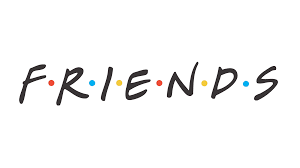

Hi there! I'm a 20-year-old computer science student at FINKI in Skopje, Macedonia, though I'm originally from the charming town of Bitola. Since I was young, I've had a deep love for math, which led me to participate in numerous math competitions throughout primary and high school. Those experiences not only honed my skills but also fueled my passion for problem-solving. Coding naturally became an extension of this passion, and I find immense joy in tackling new challenges and creating innovative solutions through programming.
Basketball has been a significant part of my life since I was six years old. It's my favorite way to spend my free time, offering both a physical outlet and a source of joy and relaxation. Whether it's playing a competitive game or just shooting hoops with friends, basketball helps me stay active and balanced amidst my academic commitments.
Basketball has been a significant part of my life since I was six years old. It's my favorite way to spend my free time, offering both a physical outlet and a source of joy and relaxation. Whether it's playing a competitive game or just shooting hoops with friends, basketball helps me stay active and balanced amidst my academic commitments.


In addition to my love for math, coding, and basketball, I have a deep passion for chess. The strategic depth and intellectual challenge of the game captivate me, providing a different kind of mental exercise that complements my other interests. I enjoy studying various strategies and tactics, constantly striving to improve my game. Chess has taught me patience, critical thinking, and the importance of planning ahead, qualities that are valuable both on and off the board. Whether playing casually with friends or competing in local tournaments, chess is an integral part of my life that I hold dear.
Speaking of friends, I truly value spending time with them and believe in building real, long-lasting friendships. For me, genuine connections are incredibly important, and I cherish the moments I share with those close to me. Thanks for visiting my page and taking the time to learn a bit about me!